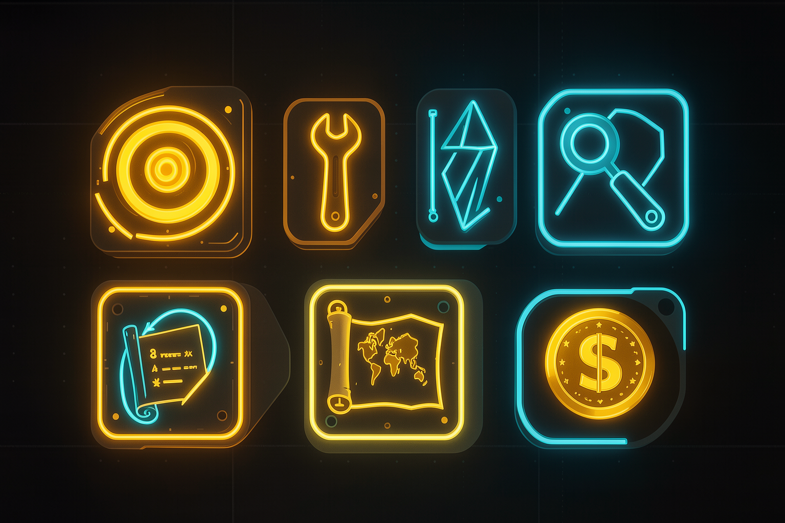

What to look at: eight tools that together make a reliable loop. Not one at a time—they’re the assembled kit. Each section below is one piece; a solid loop has them all connected.
🎯 Verifiable goal
The number one ingredient: define “done” in a way that a machine can be verified — don't "make it good." If the loop itself can't look at the result and answer yes or no, it never knows when to stop.
Read the diagram: the eight pieces don't compete — they add up into a single loop. If any one of the eight is missing, the loop is fragile right at that point.
✓ Machine-checkable
- ✓"Every test in /tests passes when you run
npm test." - ✓“Under 50 words AND mentions the price.”
- ✓“The script runs without errors and generates the CSV.”
✗ Only you know how to evaluate it
- ✗“Make it good.”
- ✗“Improve the text.”
- ✗“Clean this up.”
🛑 Hard stop
Every loop needs a hard stop: a maximum number of attempts, token budget, or time limit. Always. This is what keeps the agent from running forever when it can't reach the goal.
# Três sabores de hard stop — escolha o que cabe na sua tarefa
Pare quando todos os testes passarem, OU após 10 tentativas. # máx. tentativas
Pare quando o objetivo for atingido, OU após gastar 50k tokens. # orçamento
Pare quando terminar, OU após 15 minutos de execução. # tempoHow to verify: read your prompt and find the word "or". If there’s no limit beyond the objective, the loop has no brakes—add one before running it.
🧠 Why “always”
A loop without a stopping point is the number one source of surprises: either it gets stuck repeating the same fix, or burns through a token budget while you sleep. The hard stop is cheap to write and costly to forget.
🔧 Good tools
The actions the agent can take need to be reliable e clearly described. A tool that fails silently, or whose name doesn’t say what it does, becomes noise that confuses the loop.
💡 The craft is in the tools
Anthropic is direct: "it's crucial to design toolsets and their documentation clearly." The loop itself is trivial — the real work lies in which tools the agent has and how well described they are.
✓ Good tool
- ✓The name says what it does:
rodar_testes. - ✓Returns the actual result (output, error code).
- ✓Fails in a way the agent understands.
✗ Bad tool
- ✗Vague name:
processar. - ✗Success and failure look the same.
- ✗Does too many things at once.
🧠 Memory
Keep a history of what’s already been tried—but summarize, don’t accumulate everything. A short notes file the agent rereads is better than dumping every step back into the context, which grows and gets expensive.
🧩 Summarize > accumulate
A good pattern: the agent maintains a PROGRESS.md in 3–5 lines — what already works, what's still missing, what NOT to repeat. On each pass, it rereads this summary instead of the entire log. Memory that fits in a paragraph survives between sessions; a huge history doesn't.
✅ A separate checker
Separate the one who does the work from the one who judges it: generate → judge → fix → repeat. The agent that produces the work should never grade itself — an independent evaluator is much more honest.
Read the diagram: the maker generates, the checker judges. If it fails, it goes back for fixes; if it passes, it’s done. Because the roles are separate, "passed" actually means something.
Why shouldn’t the maker grade their own work?
🗺️ Plan first?
Not every loop needs a plan. For a job large and multi-step, ask for a plan before acting—so the agent doesn’t get lost along the way. For a small, skip the plan: it only slows things down.
✓ Plan first when…
- ✓The task has many dependent steps.
- ✓Getting it wrong at the start costs a lot later on.
- ✓You want to review the path before the agent acts.
↩ Skip the plan when…
- ·It's a small, direct correction.
- ·The path is obvious: run → read → fix.
- ·Planning would take longer than just doing it.
🧾 Logging
Save every thought, action, and result of the loop. When something goes wrong—and it will—the log lets you understand what happened, even at 3 a.m., without having watched everything live.
🔍 The log is your security camera
Without a log, a failed loop is a black box: you only see the broken result, not the path that led to it. With a log, you can read the sequence of decisions, find where things went wrong, and fix the instruction — not the output.
what it thought
what it did
what worked
💸 Cost sense
Loops burn tokens quickly — each iteration is a new model call. Start small and limited: a short task, few attempts. Only after it works should you scale the scope and the limit.
🧩 Always start small
Cost intuition matters because the price rises invisibly: 10 rounds × large context × expensive model turns into a surprise bill. Start with a low max_turns and a small task; see how much one round cost; then decide whether it’s worth scaling up.
🚦 Do this / Skip this (for now)
✓ Do
- ✓Start with 1 small, repeatable task.
- ✓Define “done” machine-verifiable.
- ✓Always add a maximum attempts.
- ✓Use a 2nd agent to evaluate important work.
✗ Skip for now
- ✗24/7 swarms of 10 agents prompting 10.
- ✗Run without a stop condition.
- ✗Trust "looks ready" without a real check.
- ✗Put one in a loop one-off task.
🧾 Module Summary
Next:
3.4 — The 8 common mistakes